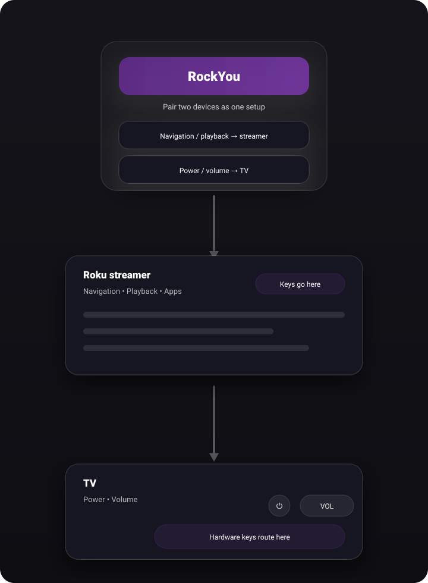
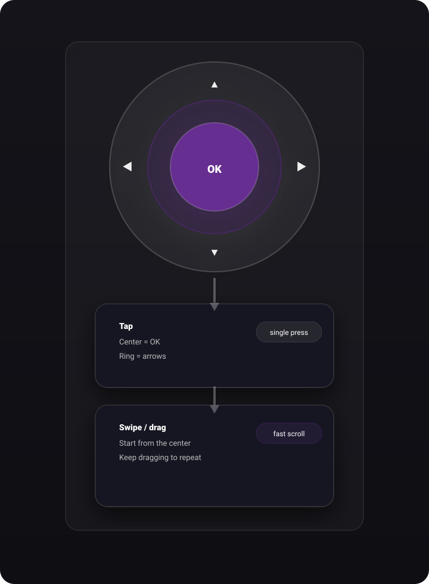
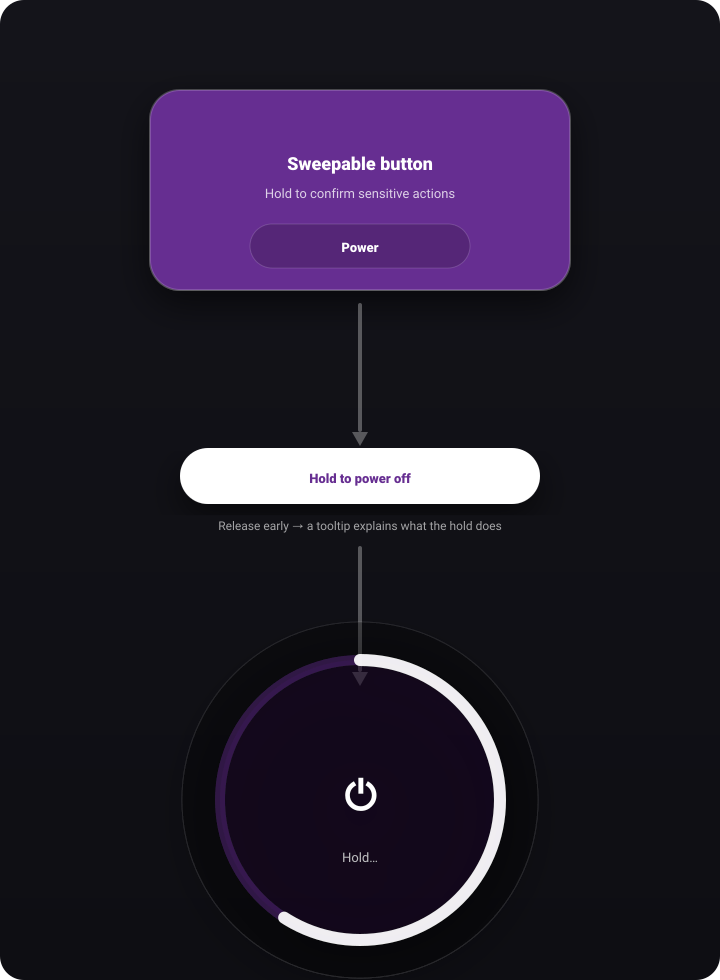
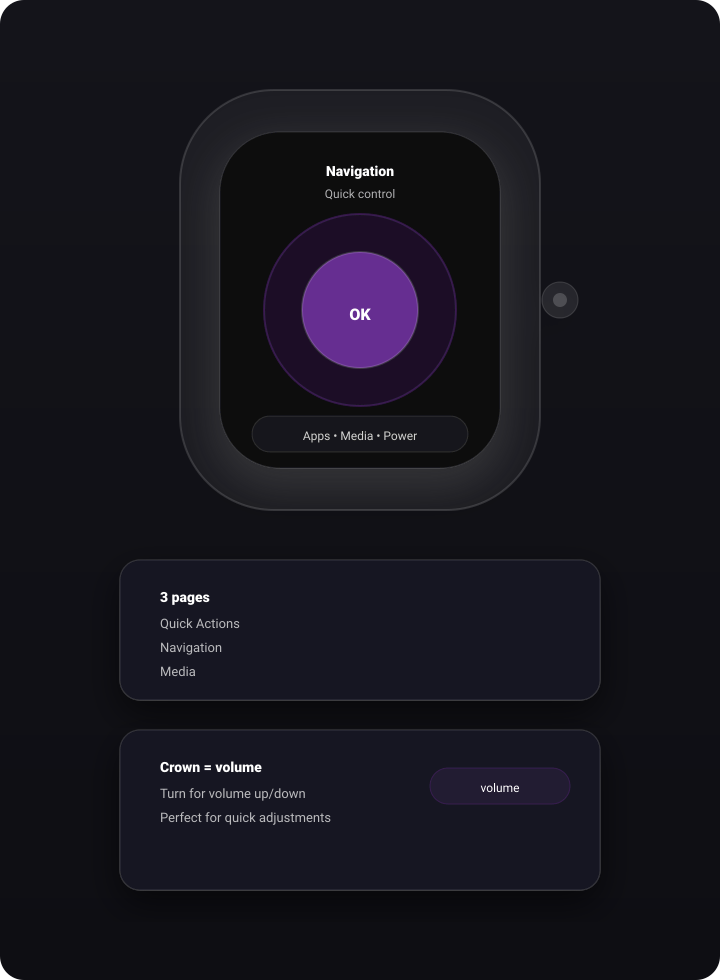
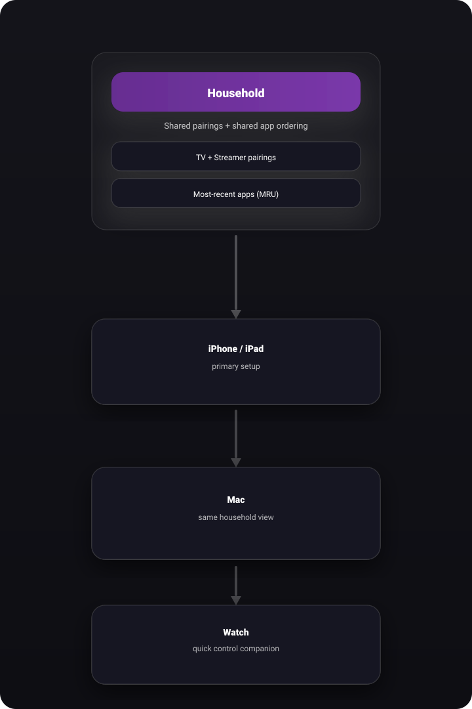

The official Roku app is great at controlling your Roku streamer. RockYou’s superpower is controlling both: the Roku for navigation/playback and the attached TV for power/volume — from one place.

Use the center as your anchor: tap for OK, swipe/drag for directions. It’s designed to be fast and forgiving.

Some actions are easy to hit by accident (power, home, launching apps with a delay). RockYou can require a short hold, with a clear progress ring.

The watch is for quick control: navigation + OK + volume. Perfect for “pause/mute/skip” without pulling out your phone.

RockYou can share your household’s paired devices and “most recent apps” ordering, so everyone sees the same setups across devices.

This page lives in Resources/Web/. If you want to replace any diagrams with real
screenshots,
drop images into Resources/Web/Images and update the src paths above.